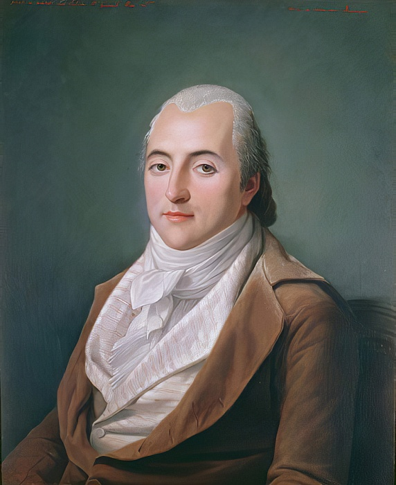
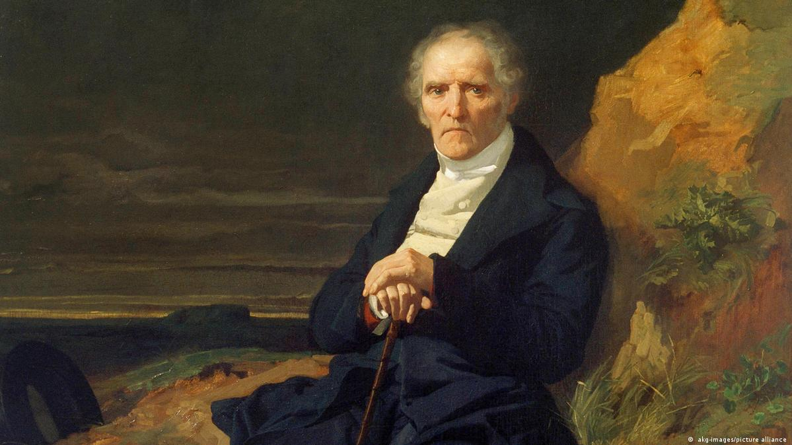
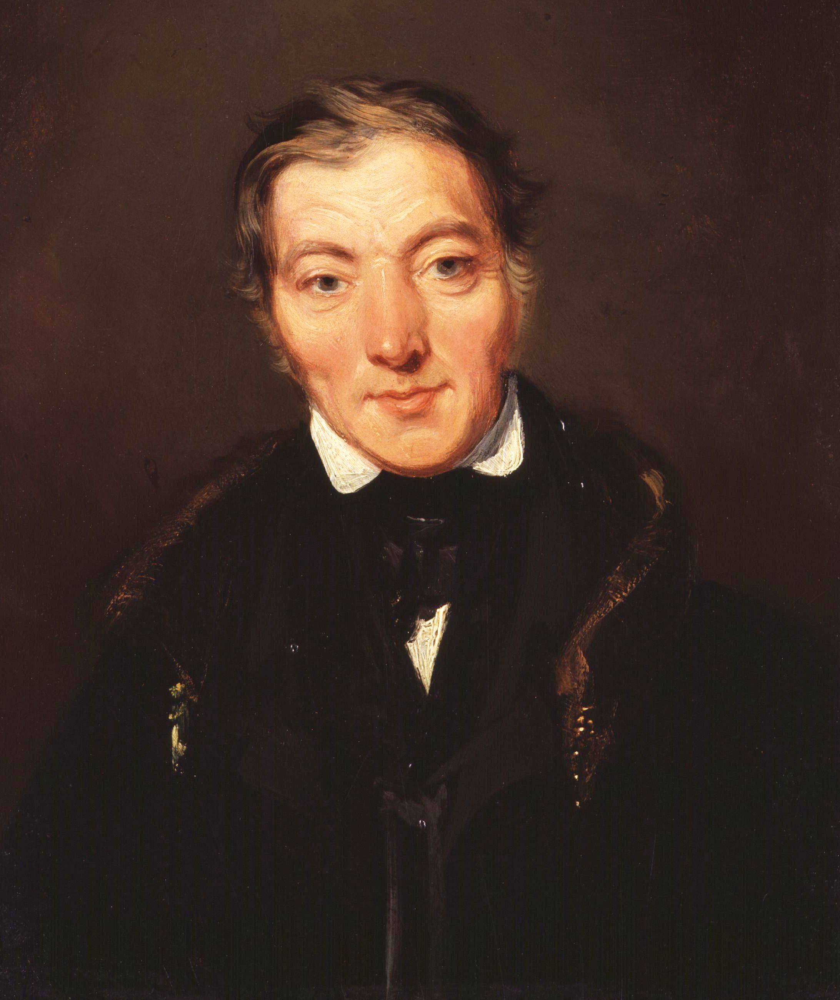

Henri de Saint-Simon
Pensador francés que defendía una sociedad organizada en torno a la ciencia y la industria. Consideraba que el conocimiento y las capacidades productivas debían contribuir al progreso de la sociedad.
Imaginar una sociedad diferente
1800-1850
Comenzar el recorridoDurante la Revolución Industrial, los cambios económicos y las nuevas condiciones de trabajo hicieron que muchos pensadores comenzaran a cuestionar la forma en que estaba organizada la sociedad. Frente a problemas como la pobreza, la desigualdad y la explotación laboral, surgieron propuestas que buscaban construir una sociedad diferente.
Entre sus principales representantes estuvieron Saint-Simon, Charles Fourier y Robert Owen, cuyas ideas dieron origen a lo que se conoce como socialismo utópico. Aunque cada uno imaginaba una sociedad distinta, todos coincidían en que era posible mejorar las condiciones de vida mediante una organización más justa y cooperativa.

Pensador francés que defendía una sociedad organizada en torno a la ciencia y la industria. Consideraba que el conocimiento y las capacidades productivas debían contribuir al progreso de la sociedad.

Pensador francés que propuso crear comunidades asociativas llamadas falanges, donde las personas pudieran organizar el trabajo y la convivencia de una manera diferente.

Empresario y reformador británico que buscó mejorar las condiciones de vida de los trabajadores mediante la educación y mejores condiciones laborales. Puso en práctica algunas de sus ideas en la comunidad de New Lanark.
Selecciona un acontecimiento para explorar qué sucedió y dónde ocurrió.
1800
Lugar: New Lanark, Escocia.
Robert Owen asumió la dirección de la comunidad industrial y comenzó a introducir cambios en las condiciones de vida de sus trabajadores. Entre sus prioridades estuvieron la educación y el bienestar de las familias, buscando demostrar que una fábrica podía funcionar sin descuidar a las personas.
1808
Lugar: Francia.
Charles Fourier publicó Teoría de los cuatro movimientos y de los destinos generales, obra en la que presentó sus ideas sobre una nueva forma de organizar la sociedad. Propuso comunidades llamadas falanges, donde el trabajo y la convivencia se organizarían de acuerdo con las inclinaciones de cada persona.
Fuentes: [2].
1816
Lugar: New Lanark, Escocia.
Se inauguró el Instituto para la Formación del Carácter, impulsado por Robert Owen. El centro ofrecía educación a los niños y buscaba influir positivamente en su desarrollo. Para Owen, mejorar la sociedad también significaba ofrecer mejores oportunidades desde la infancia.
Fuentes: [4].
1825
Lugar: Francia.
En una de sus últimas obras, El nuevo cristianismo, Saint-Simon defendió una sociedad orientada a mejorar las condiciones de vida de los sectores más desfavorecidos. Consideraba que el progreso debía beneficiar principalmente a quienes más lo necesitaban.
Fuentes: [6].
1825
Lugar: Indiana, Estados Unidos.
Robert Owen adquirió el asentamiento de New Harmony con la intención de convertirlo en una comunidad basada en la educación, la cooperación y la igualdad social. Para desarrollar el proyecto contó también con la participación de William Maclure, un pedagogo estadounidense.
Fuentes: [5].
1827
Lugar: New Harmony, Indiana, Estados Unidos.
Las dificultades para mantener la organización y el funcionamiento de la comunidad terminaron provocando su disolución. Aunque el proyecto no consiguió consolidarse, dejó una experiencia importante para quienes buscaban nuevas formas de convivencia y organización social. El asentamiento, sin embargo, continuó existiendo.
Fuentes: [5].
New Lanark y New Harmony muestran dos resultados distintos de los intentos de Owen por cambiar la organización de la sociedad. Mientras que en New Lanark consiguió mantener sus reformas y mejorar las condiciones de los trabajadores, el proyecto comunitario de New Harmony terminó disolviéndose en 1827. Estas experiencias reflejaron las dificultades que implicaba llevar sus ideas a la realidad.
Aunque estos proyectos no lograron establecer el modelo de sociedad que imaginaban sus impulsores, sus propuestas contribuyeron al debate sobre las condiciones de trabajo, la educación y la cooperación. También dejaron una pregunta que sigue siendo relevante: ¿qué tan difícil es convertir una sociedad ideal en una realidad?